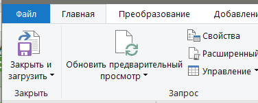
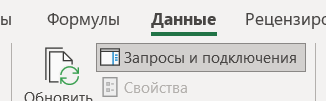

Методички по выполнению заданий
Пошаговые инструкции и проверка результата. Числа, тексты и правила сохранения берите из своего варианта.
Набор и оформление в Word
- Настройте страницу. Создайте документ и откройте «Макет → Поля → Настраиваемые поля». Укажите поля и ориентацию из задания. Наберите исходный текст, разделяя его на абзацы.
- Задайте параметры текста. В разделе «Главная → Стили» настройте стиль основного текста. Укажите шрифт и кегль, а в параметрах абзаца задайте выравнивание, красную строку, междустрочный интервал и отступы до и после абзаца. Примените «Заголовок 1» и «Заголовок 2» к соответствующим строкам. Если нужна нумерация, выберите многоуровневый список, связанный со стилями заголовков.
- Настройте нумерацию заголовков, если она задана. На вкладке «Главная» откройте «Многоуровневый список» и выберите шаблон, связанный со стилями «Заголовок 1» и «Заголовок 2». Проверьте последовательность 1, 1.1, 2, 2.1.
- Оформите колонки. Выделите только нужный фрагмент. Откройте «Макет → Колонки → Другие колонки», укажите число и ширину колонок, промежуток и разделитель. В поле «Применить» выберите выделенный текст. Если колонки захватили соседний текст, включите отображение знаков абзаца и проверьте разрывы раздела до и после фрагмента.
- Настройте колонтитулы. Используйте вкладку «Вставка» для верхнего и нижнего колонтитулов. Введите реквизиты из варианта, а номер страницы вставьте через команду «Номер страницы».
- Добавьте диаграмму и формулу. Через «Вставка → Диаграмма» выберите тип из задания и замените демонстрационные данные значениями варианта. Сверьте категории, единицы и подписи. Формулу наберите через «Вставка → Уравнение» или Alt + =, используя шаблоны дробей, индексов и сумм.
- Сохраните результат. Выберите формат Word, указанный в варианте, и экспортируйте PDF. Откройте PDF и проверьте разрывы страниц, колонки, нумерацию, читаемость диаграммы и формулы.
Самопроверка. Заголовки видны в области навигации. Колонки применены к нужному фрагменту. Диаграмма и формула редактируются в Word.
Слияние документов в Word
- Создайте источник данных. Откройте «Рассылки → Начать слияние → Письма», затем «Выбрать получателей → Ввести новый список». В настройке столбцов создайте поля с точными названиями из варианта. Заполните пять строк и сохраните список «Адресаты». Если выдан готовый список, подключите его через «Использовать существующий список».
- Подготовьте одно письмо. Наберите постоянные части письма по образцу в варианте. В вариантах 39–58 разместите реквизиты отправителя слева и блок получателя справа. Для двух блоков можно использовать таблицу из одной строки и двух ячеек, настроив границы по образцу.
- Вставьте поля. Поставьте курсор на место изменяемого реквизита и выберите «Рассылки → Вставить поле слияния». В вариантах 39–58 в правый блок вставьте «Должность», «Организация», «Инициалы_Фамилия» и «Адрес_1», а в обращение — «Обращение», «Имя» и «Отчество». Для остальных вариантов используйте поля, указанные в задании.
- Просмотрите пять писем. Нажмите «Просмотр результатов» и пролистайте записи. Проверьте адрес, должность и обращение у каждого получателя. Если видны буквальные надписи в кавычках, замените их полями через вкладку «Рассылки».
- Сформируйте результат. Выберите «Завершить и объединить → Изменить отдельные документы → Все». Сохраните полученный документ в DOCX и PDF. Если задание требует архив с паролем, упакуйте итоговые файлы и проверьте извлечение.
Самопроверка. В результате пять уведомлений. Реквизиты и обращение подставлены из списка, а тема, основной текст и подпись сохранены по образцу.
Подготовка презентации в PowerPoint
- Подготовьте три скриншота. Откройте три изображения и сделайте по одному снимку фрагмента через Win + Shift + S. Сохраните снимки отдельно. На тренировке выбирайте изображения по теме варианта, на ДЭ используйте выданные материалы.
- Создайте три слайда. На каждом разместите отдельные заголовок, текст и скриншот. Для заголовков задайте Times New Roman, 24 пт, по центру. Для основного текста — Times New Roman, 18 пт и выравнивание по ширине, если это указано в варианте.
- Слайд 1. Выделите рисунок. На вкладке «Формат рисунка» откройте «Граница рисунка», выберите синий цвет, сплошную линию и толщину 4,5 пт.
- Слайд 2. Выделите рисунок и выберите «Формат рисунка → Обрезка → Обрезать по фигуре → Овал». При необходимости передвиньте изображение в пределах рамки обрезки.
- Слайд 3. Для третьего рисунка откройте «Формат рисунка → Эффекты для рисунка → Сглаживание краёв» и задайте 10 пт.
- Сохраните презентацию. Проверьте её в режиме показа слайдов. Сохраните PPTX и исходные снимки в папку варианта. Если нужен архив, используйте пароль из задания и проверьте извлечение PPTX.
Цвет и толщину рамки, сглаживание и шрифты сверяйте с условиями своего варианта.
Самопроверка. На трёх слайдах разные фрагменты изображений. Каждый эффект применяется к нужному рисунку. Заголовки и основной текст читаются в режиме показа.
Создание мобильного слайдера
Подготовьте в GIMP три изображения размером 120 × 90 px с прозрачными скруглёнными углами. В PowerPoint соберите статичный макет с тремя карточками и двумя стрелками. Итог для сдачи — снимок slider.png.
Размер 120 × 90 · Прозрачные углы · Экспорт PNG · Макет в PowerPoint
Скачать методичку по слайдеру · DOCX

Подготовка файлов
Создайте рабочую папку по заданию и подпапку «Изображения». Для тренировки подберите три изображения одной темы размером 1920 × 1080 px. Назовите их, например, source1.jpg, source2.jpg и source3.jpg. На ДЭ работайте с выданными исходниками. Откройте первую картинку через «Файл → Открыть» и отработайте весь процесс на ней.
Если слева под инструментами нет настроек, откройте «Окна → Стыкуемые диалоги → Параметры инструментов» (Tool Options). Там находятся поля размера, положения и радиуса. При работе с маленькой картинкой увеличьте масштаб просмотра внизу окна до 400–800%. Размер файла от этого останется 120 × 90 px.
1–2. Получите размер 120 × 90 px в GIMP
Выберите один из трёх способов. У исходника 1920 × 1080 пропорции 16:9, у карточки 120 × 90 — 4:3. Чтобы предметы сохранили форму, меняйте пропорции кадрированием, а при масштабировании оставляйте цепочку между шириной и высотой замкнутой.
- Кадрирование рамкой — если хотите выбрать фрагмент на глаз.
- Кадрирование по выделению — если удобнее ввести точные числа.
- Уменьшение по высоте и обрезка краёв — если объект уже расположен около центра.
Способ 1. Кадрирование рамкой 4:3
- Выберите «Кадрирование» (Shift + C). В параметрах инструмента включите «Фиксированное», выберите «Соотношение сторон» и введите
4:3. В GIMP 3 включите «Удалить обрезанные пиксели» (Delete cropped pixels), чтобы холст уменьшился до рамки. Если есть флажок «Только выбранные слои», снимите его. - Протяните рамку вокруг главного объекта. Потяните за середину рамки, чтобы сдвинуть её. Проверьте, что внутри нет случайных пустых полос, и нажмите Enter.
- Откройте «Изображение → Масштабировать изображение» (Scale Image). Выберите единицы
px. С замкнутой цепочкой введите ширину120и нажмите Tab. Высота должна стать90. Выберите, например, кубическую интерполяцию и нажмите «Масштабировать».
Способ 2. Прямоугольное выделение с точными размерами
- Выберите «Прямоугольное выделение» (R). Для кадрирования отключите «Закруглённые углы», «Растушевать края» и «Фиксированное». Протяните рамку примерно по нужному фрагменту.
- В параметрах выделения введите ширину
1440и высоту1080в пикселях. Для снимка 1920 × 1080 положениеX = 240, Y = 0оставит центральную часть. Можно сдвинуть рамку влево или вправо, если главный объект ближе к краю. - Подтвердите рамку щелчком внутри неё. Выберите «Изображение → Кадрировать по выделению» (Crop to Selection), затем снимите выделение (Ctrl + Shift + A). Масштабируйте всё изображение до 120 × 90 px с замкнутой цепочкой, как в последнем шаге первого способа.
Способ 3. Уменьшение по высоте и обрезка краёв
- Для исходника 1920 × 1080 откройте «Изображение → Масштабировать изображение». С замкнутой цепочкой введите высоту
90px и нажмите Tab. Ширина станет160px. Примените масштабирование и увеличьте масштаб просмотра. - Прямоугольным выделением без растушёвки и скругления задайте размер
120 × 90px. Для центрального фрагмента укажите положениеX = 20, Y = 0. Так с каждой стороны уйдёт по 20 px. - Подтвердите рамку щелчком внутри неё. Выполните «Изображение → Кадрировать по выделению» и снимите выделение. Холст уже имеет нужный размер. Переходите к скруглению.
Контроль перед скруглением. В меню «Изображение → Свойства изображения» проверьте, что холст ровно 120 × 90 px. Если при вводе ширины 120 высота близка к 68, у холста сохранилось соотношение 16:9. Вернитесь к кадрированию или воспользуйтесь третьим способом.
3. Скруглите углы и получите прозрачность
Выберите слой с фотографией. Инструментом «Прямоугольное выделение» (R) нарисуйте рамку. В параметрах поставьте положение X = 0, Y = 0 и размер 120 × 90 px. Включите «Закруглённые углы», оставьте растушёвку выключенной. Для образца КИМ задайте 10 px. В тренировочных заданиях возьмите радиус из варианта — 8, 10 или 12 px. Щёлкните внутри рамки, чтобы применить выделение. Рамка должна совпадать с границами холста и скругляться во всех четырёх углах. Затем выберите один из способов ниже.
Способ А. Удалить выделенные углы
- Откройте «Слой → Прозрачность → Добавить альфа-канал». Если пункт неактивен при выбранном слое с фотографией, альфа-канал уже может быть добавлен.
- Нажмите «Выделение → Инвертировать» (Ctrl + I). Теперь выделены четыре области за пределами рамки. Нажмите Delete и снимите выделение (Ctrl + Shift + A).
- Проверьте углы на увеличении. В них должна появиться шахматная сетка. Если исчезла середина, отмените удаление (Ctrl + Z) и проверьте, что выделены именно углы.
Способ Б. Скрыть углы маской слоя
- Оставьте выделенной внутреннюю область скруглённой рамки. Нажмите правой кнопкой по слою с фотографией и выберите «Добавить маску слоя» (Add Layer Mask).
- В диалоге выберите «Выделение» (Selection), оставьте инверсию маски выключенной и нажмите «Добавить». Белая область маски показывает фотографию, чёрная скрывает углы.
- Снимите выделение. У слоя появится вторая миниатюра — маска. Углы станут прозрачными, а пиксели фотографии останутся в проекте. При необходимости сохраните проект GIMP в
.xcf, чтобы позже поправить маску.
4. Экспортируйте и проверьте три PNG
- Спрячьте другие видимые слои под фотографией, если они закрывают прозрачность. Через «Файл → Экспортировать как» (Ctrl + Shift + E) выберите папку «Изображения», введите
img1.pngи подтвердите экспорт. - Откройте экспортированный файл в GIMP отдельной вкладкой. Проверьте размер 120 × 90 px и шахматную сетку во всех четырёх углах. Если вместо неё белый фон, проверьте альфа-канал или маску, видимость нижних слоёв и расширение
.png. - Повторите выбранный порядок для второго и третьего исходников. Сохраните
img2.pngиimg3.png, откройте их для проверки и вставьте три готовых файла в PowerPoint.
Справка GIMP с изображениями интерфейса. Кадрирование · Прямоугольное выделение · Маска слоя
5. Сборка макета в PowerPoint
- Для нового слайда выберите «Главная → Макет → Пустой». Через «Вставка → Фигуры» добавьте подложку. Цвет фона и форму кнопок возьмите из задания. Для заголовка используйте «Вставка → Надпись».
- Через «Вставка → Рисунки → Это устройство» добавьте три PNG. Перетащите их примерно на свои места. Чтобы поменять размер без искажения, тяните за угловой маркер или задайте одинаковую высоту с сохранением пропорций.
- Выделите три рисунка, щёлкая по ним с зажатой клавишей Ctrl. В меню «Формат рисунка → Выровнять» выберите выравнивание выделенных объектов, затем «Выровнять по середине» и «Распределить по горизонтали». Картинки встанут в ряд с равными промежутками.
- Через «Вставка → Фигуры» добавьте кнопки по краям ряда. На кнопках разместите контрастные шевроны или стрелки. Левая указывает влево, правая — вправо. Сохраните редактируемый
slider.pptxдля тренировки.
6. Снимок slider.png
Запустите показ слайда (F5 или Shift + F5). Нажмите Win + Shift + S и выделите прямоугольную область макета. Откройте снимок в «Ножницах» и сохраните как slider.png. Откройте файл и проверьте, что в кадре весь фон макета, три карточки и обе стрелки.
Проверка перед сдачей
- Каждый из трёх PNG имеет размер 120 × 90 px. Все четыре угла прозрачные и скруглены с радиусом из варианта.
- Карточки стоят в одном ряду с равными промежутками. Стрелки по краям контрастные и направлены в разные стороны.
- Снимок открывается под точным именем
slider.png. Панели PowerPoint остались за границами кадра.
Частые ошибки
- Изображение вытянуто. Сначала кадрируйте до 4:3, затем уменьшайте с сохранением пропорций.
- Углы белые. Добавьте альфа-канал, удалите выделенные углы и экспортируйте в PNG.
- Карточки разного размера. В PowerPoint включите сохранение пропорций и задайте рисункам одинаковую высоту.
- Стрелка перекрыта подложкой. Переместите подложку на задний план, а кнопку поставьте рядом с краем ряда.
- Сохранена только презентация. Сделайте снимок собранного макета и сохраните его как
slider.png.
Таблицы и выборки в Microsoft Excel
Создайте одну книгу Excel с таблицами «Студент» и «Работник» и сохраните в ней три выборки. Города, должность и записи берите из своего варианта. Для выборок используйте кнопки Power Query на вкладке «Данные».
На снимках показана учебная книга с вымышленными записями. Для примера выбраны Казань, Тула и должность «инженер». Красные рамки показывают, куда нажать. На телефоне широкие снимки можно прокрутить вбок. Нажмите на снимок, чтобы открыть его в полном размере.
Подготовка таблиц · Учебные таблицы · Три выборки · Проверка перед сдачей
1. Подготовьте две таблицы
- Создайте пустую книгу Excel. Переименуйте первый лист в «Студент». Кнопкой «+» создайте лист «Работник».
- Перенесите названия столбцов в первую строку каждого листа. В «Студенте» выделите столбец F «Номер телефона» и нажмите Ctrl + 1. Выберите формат «Текстовый». После этого внесите все 10 строк данных из своего варианта. Если номер начинается с нуля, проверьте, что ноль сохранился.
- На листе «Работник» перенесите его 10 строк. В каждой таблице проверьте порядок полей, уникальные коды от 1 до 10 и отсутствие пустых строк посередине списка.
- На листе «Студент» выделите диапазон A1:G11 и нажмите Ctrl + T. Проверьте диапазон и поставьте флажок «Таблица с заголовками». Нажмите «ОК». На вкладке «Конструктор таблиц» укажите имя таблицы
Студенты. Повторите на листе «Работник» с именемРаботники.


| Столбец | Студент | Работник |
|---|---|---|
| A | Код студента | Код работника |
| B | Фамилия | Фамилия |
| C | Имя | Имя |
| D | Отчество | Отчество |
| E | Адрес | Адрес |
| F | Номер телефона | Организация |
| G | Профессия | Должность |
Учебные таблицы для примера со снимков
Чтобы повторить пример, перенесите каждую таблицу вместе с заголовками на свой лист, начиная с ячейки A1. До вставки задайте столбцу F на листе «Студент» формат «Текстовый», чтобы сохранить нули в номерах. Для работы по выданному варианту используйте его исходные данные.
Студент
| Код студента | Фамилия | Имя | Отчество | Адрес | Номер телефона | Профессия |
|---|---|---|---|---|---|---|
| 1 | Соколова | Анна | Ильинична | г. Тула | 00000001 | оператор |
| 2 | Смирнов | Илья | Юрьевич | г. Пермь | 00000002 | редактор |
| 3 | Орлова | Мария | Ивановна | г. Тула | 00000003 | оператор |
| 4 | Волков | Иван | Львович | г. Казань | 00000004 | редактор |
| 5 | Белова | Ирина | Михайловна | г. Омск | 00000005 | оператор |
| 6 | Громов | Олег | Павлович | г. Казань | 00000006 | редактор |
| 7 | Зайцева | Вера | Игоревна | г. Пермь | 00000007 | оператор |
| 8 | Попов | Лев | Андреевич | г. Омск | 00000008 | редактор |
| 9 | Крылова | Ева | Романовна | г. Пермь | 00000009 | оператор |
| 10 | Морозов | Павел | Олегович | г. Тула | 00000010 | редактор |
Работник
| Код работника | Фамилия | Имя | Отчество | Адрес | Организация | Должность |
|---|---|---|---|---|---|---|
| 1 | Морозов | Павел | Олегович | г. Тула | Учебный центр 1 | делопроизводитель |
| 2 | Крылова | Ева | Романовна | г. Пермь | Учебный центр 2 | инженер |
| 3 | Попов | Лев | Андреевич | г. Омск | Учебный центр 3 | архивариус |
| 4 | Зайцева | Вера | Игоревна | г. Пермь | Учебный центр 1 | инженер |
| 5 | Громов | Олег | Павлович | г. Казань | Учебный центр 2 | инженер |
| 6 | Белова | Ирина | Михайловна | г. Омск | Учебный центр 3 | архивариус |
| 7 | Волков | Иван | Львович | г. Казань | Учебный центр 1 | инженер |
| 8 | Орлова | Мария | Ивановна | г. Тула | Учебный центр 2 | делопроизводитель |
| 9 | Смирнов | Илья | Юрьевич | г. Пермь | Учебный центр 3 | редактор |
| 10 | Соколова | Анна | Ильинична | г. Тула | Учебный центр 1 | инженер |
2. Соберите три выборки в Power Query
Каждую выборку начинайте с исходного листа. Щёлкните любую ячейку внутри его таблицы, откройте «Данные» и нажмите «Из таблицы/диапазона». Команда может находиться внутри меню «Получить данные». Откроется редактор Power Query.

Выборка 1. Телефонная книга
- Откройте запрос из таблицы на листе «Студент». Справа в поле «Имя» введите «Телефонная книга».
- Настройте тип поля «Номер телефона» по инструкции ниже.
- На вкладке «Главная» откройте «Выбор столбцов». Если кнопка свёрнута, сначала нажмите «Управление столбцами», затем верхнюю часть кнопки «Выбор столбцов». Оставьте четыре флажка у полей «Фамилия», «Имя», «Отчество» и «Номер телефона» и нажмите «ОК».
- На вкладке «Главная» нажмите «Закрыть и загрузить». Excel создаст лист с результатом. Сверьте 10 строк и 4 столбца.
Как сохранить начальные нули в телефонах
- В предварительном просмотре Power Query щёлкните по названию столбца «Номер телефона». Если столбец скрыт справа, прокрутите таблицу нижней полосой в редакторе.
- На вкладке «Главная» откройте «Тип данных» и выберите «Текст».
- Если появится вопрос, выберите «Заменить текущее». Excel обновит шаг автоматического преобразования. Проверьте, что номер снова начинается с нуля.
- Если ноль всё ещё отсутствует, проверьте исходную ячейку на листе Excel и при необходимости заново введите номер в ячейку текстового формата. Если исходная ячейка уже содержит ноль, проверьте шаги запроса справа. Шаг, который раньше преобразовал телефон в число, нужно исправить до фильтрации или выбора столбцов.



Выборка 2. Студенты из двух городов
- Вернитесь на исходный лист «Студент» и снова выберите «Данные → Из таблицы/диапазона». Назовите новый запрос «Студенты из двух городов».
- Установите тип «Текст» у номера телефона, как в первой выборке.
- В заголовке столбца «Адрес» нажмите стрелку справа. Снимите флажок «Выбрать все» и отметьте оба города из своего варианта. Выбирайте значения целиком, включая «г.». Нажмите «ОК».
- Убедитесь, что остались строки из любого из двух выбранных городов и видны все семь столбцов. Нажмите «Закрыть и загрузить».


Выборка 3. Работники по должности
- На исходном листе «Работник» откройте таблицу через «Данные → Из таблицы/диапазона». Назовите запрос «Работники по должности».
- Откройте фильтр в заголовке «Должность». Снимите флажок «Выбрать все» и отметьте должность из условия. Нажмите «ОК».
- Проверьте, что каждая строка соответствует выбранной должности и в результате семь столбцов, включая «Организация». Нажмите «Закрыть и загрузить».

Как задать другие условия в вариантах 51–58
- Оставить или исключить значения. Откройте стрелку в заголовке столбца и отметьте только нужные значения. Если нужно исключить город или профессию, снимите флажок у этого значения и оставьте остальные.
- Проверить часть текста. В меню столбца выберите «Текстовые фильтры», а затем «Начинается с», «Заканчивается на» или «Содержит». Введите текст из задания. Для двух возможных начальных букв задайте два условия и соедините их через «Или».
- Отобрать диапазон кодов. Убедитесь, что у поля с кодом тип «Целое число». В разделе «Числовые фильтры» используйте «Между» или «Больше или равно». Для включительного диапазона введите границы с условиями «больше или равно» и «меньше или равно».
- Применить два фильтра и сортировку. Если запись должна подходить по двум столбцам, задайте фильтр в каждом из них. Для сортировки откройте стрелку нужного столбца и выберите порядок из задания. Отберите строки и отсортируйте их до того, как оставите только нужные для вывода столбцы.
Справка Microsoft по фильтрам Power Query
3. Проверьте и сохраните работу
- В книге должны быть два исходных листа и три листа с результатами. Откройте «Данные → Запросы и подключения» и проверьте, что в списке есть все три запроса.
- Сверьте результаты второго и третьего запросов с исходными таблицами. Если вы исправили данные, нажмите «Данные → Обновить всё» и проверьте результаты ещё раз.
- Сохраните книгу в формате
.xlsxв папке своего задания. При переходе в другой кабинет перенесите эту книгу. Источники и результаты хранятся внутри неё.
